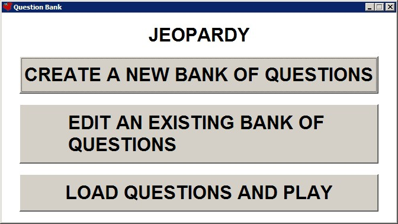
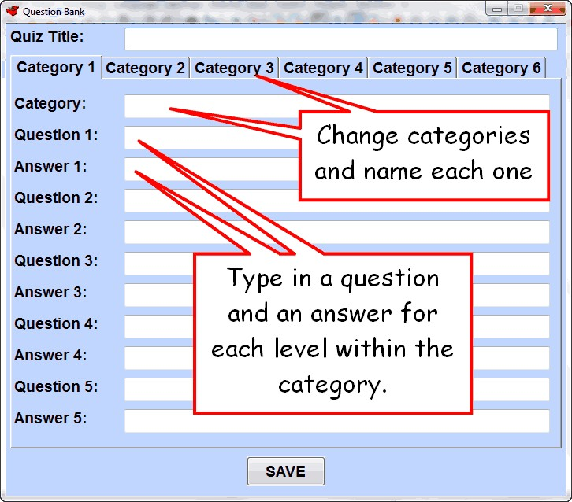
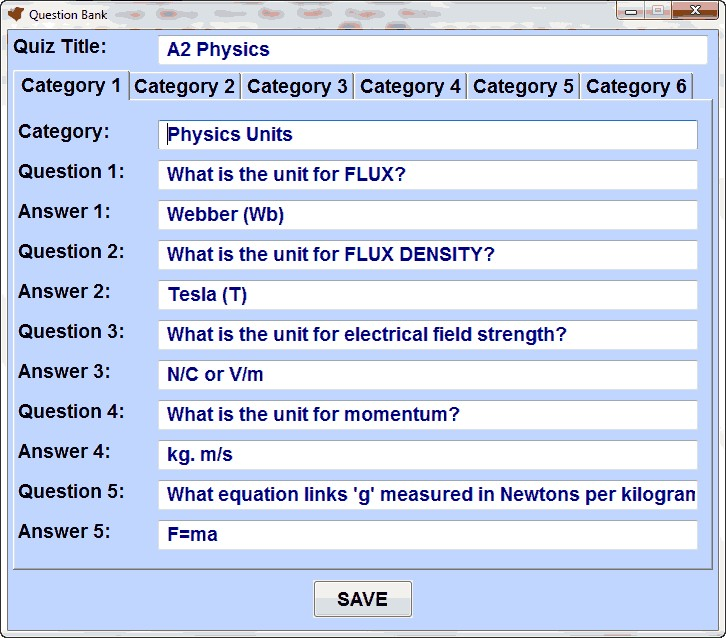
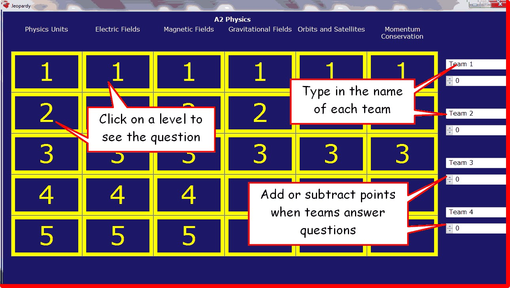

Jeopardy
When you first open Jeopardy, you are greeted with the following screen:

CREATE A NEW BANK OF QUESTIONS

If you have previously created a bank of questions, you can choose to edit them:

LOAD QUESTIONS AND PLAY

Top tip:
Always check the layout of your questions and answers before using them with a class.
If you want a line-break, use this tag:
_#_
For example:
What is:_#_4 + 2?
Would be displayed as:
What is:
4 + 2?